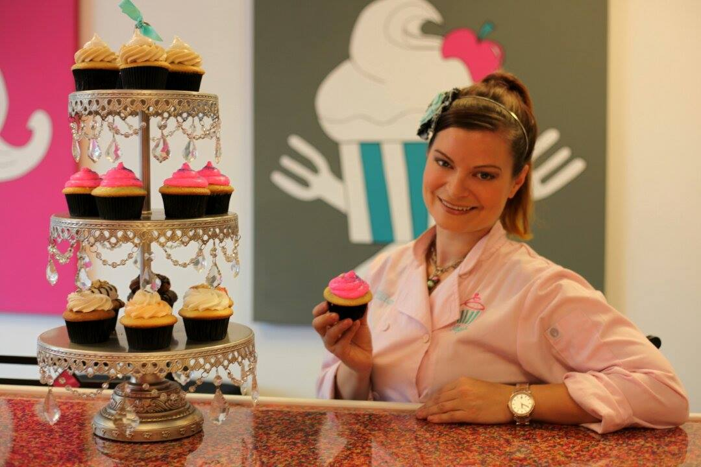
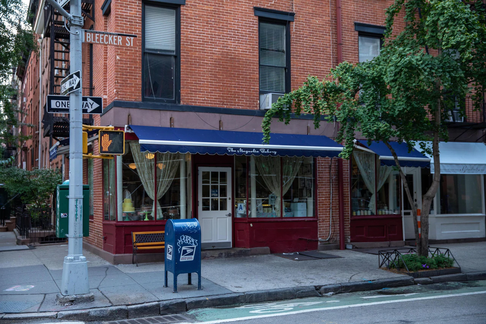

Sweet Bliss Cake is a company that deals in cooking bread, pastries and other bakery foods.Here you'll find a handful of our favorite pastry recipes, including some easy pastry ideas that start with shortcut ingredients such as frozen puff pastry or refrigerated piecrust.
Sweet Bliss Cake was first founded in Accra, Spintex on the 29th of June 2011.Hospitality is at the heart of the Magnolia Bakery experience. We believe a respectful, empathetic working environment is crucial to creating a positive team experience and keeping our guests happy. Interested in one of the sweetest gigs around? Visit our four different branches at Accra(Spintex),Osu, Kumasi(Atasemanso), Takoradi and Cape Coast.
